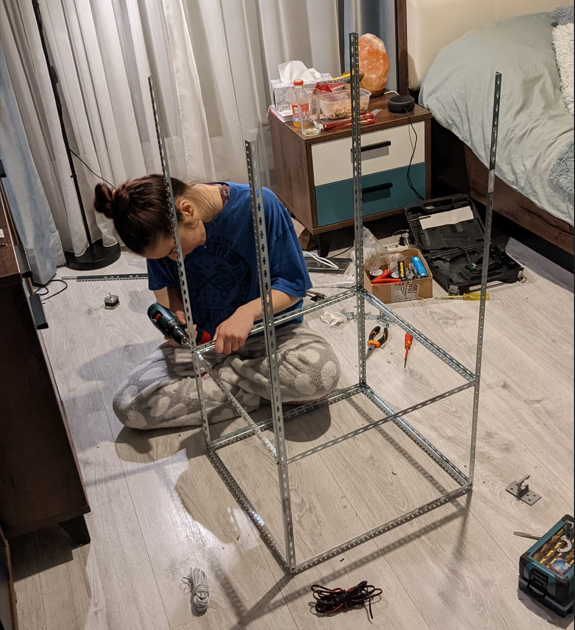
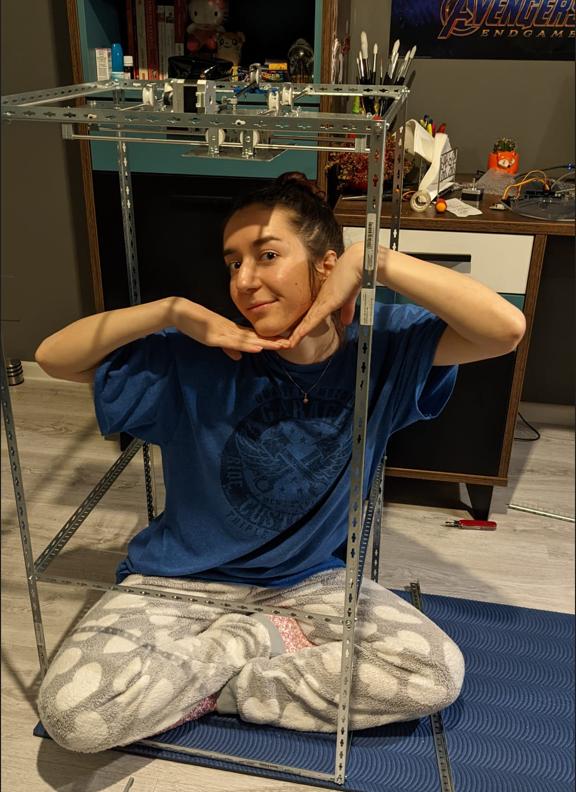
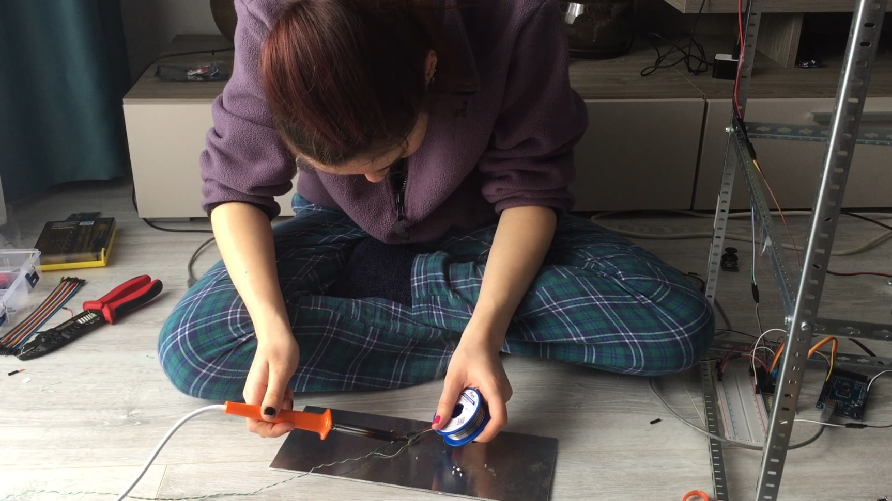
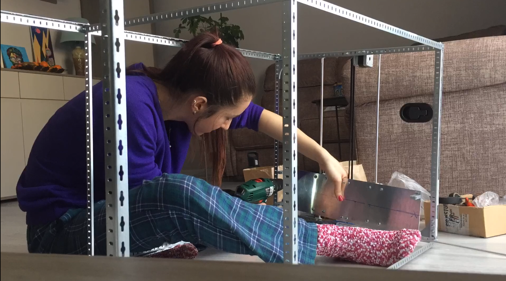
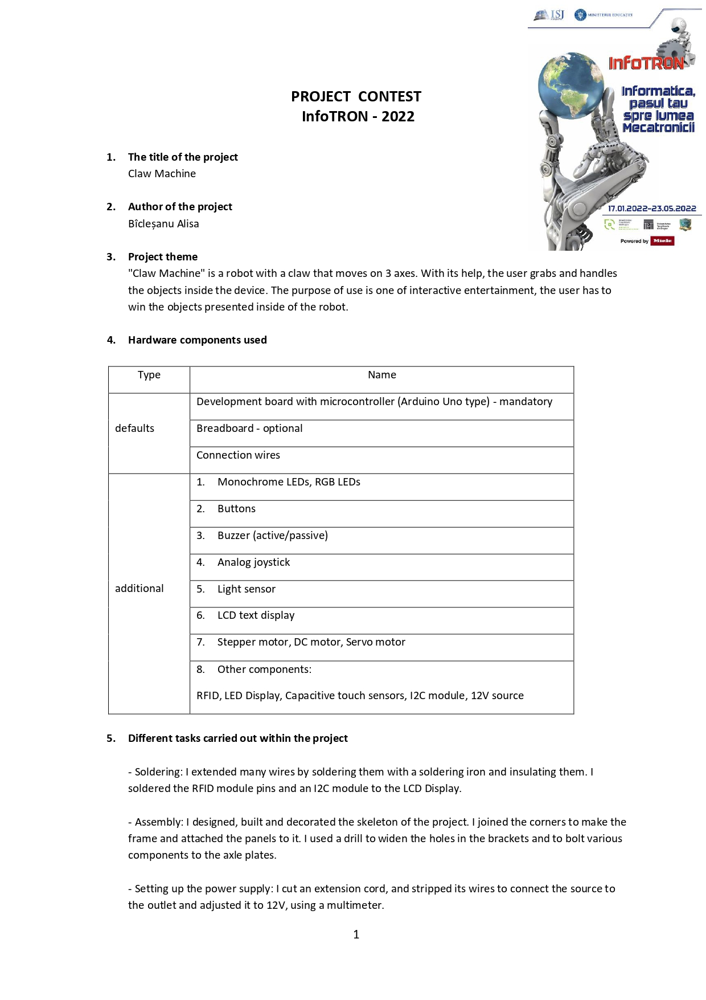
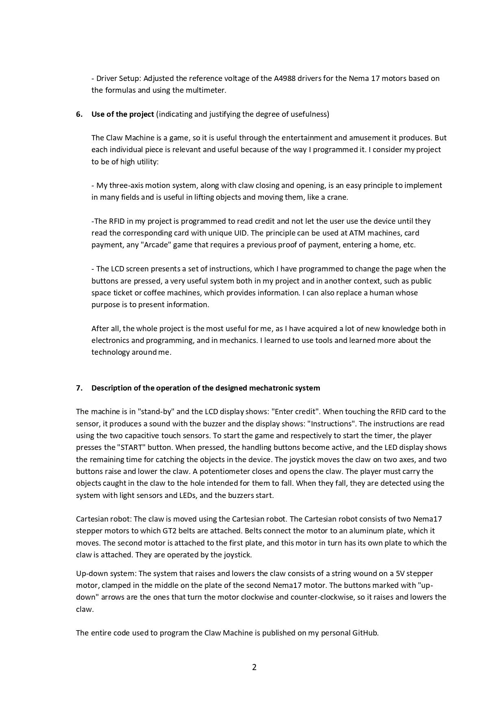

Claw machine
In 2022, Transilvania University of Brașov hosted a project named "InfoTron". They introduced highschoolers into the world of robotics, by giving away Arduino kits and a few courses. I signed up for the project. At the end of the project, there was a competition that required us to make a robot. I made my Claw Machine over the course of 50 days and I won first place.
Before entering this project, I had no knowledge of robotics, mechanics, and I didn't know what Arudino was. I started easy, I learned to use a drill and to program a button to light an LED. Later on, I put together an entire robot body, tinned wire, cut metal, made electrical circuits, coded sensors and motors etc. Just like that, I discovered a passion for robotics!
Claw machine: Winning(with subtitles):
My progress (pictures and videos):




Presentation sheet:


Coding
When I entered high school I got into programming. Coding comes naturally for me, since I believe I am a logical thinker. I have learned C, C++, HTML and CSS so far. I made some little games, I wrote my claw machine's code, I participated in Advent Of Code and I built this website! :D I enjoy coding and I am excited for future projects.
My GitHub page